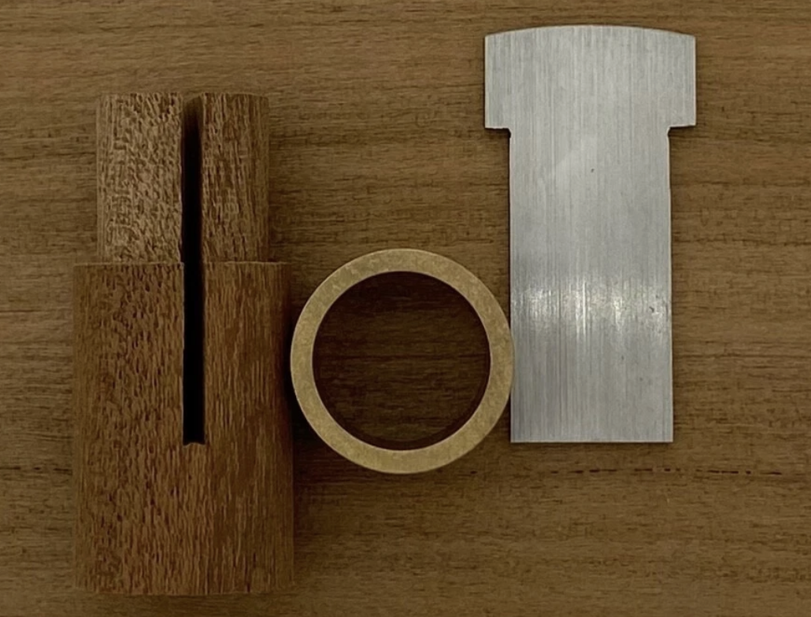
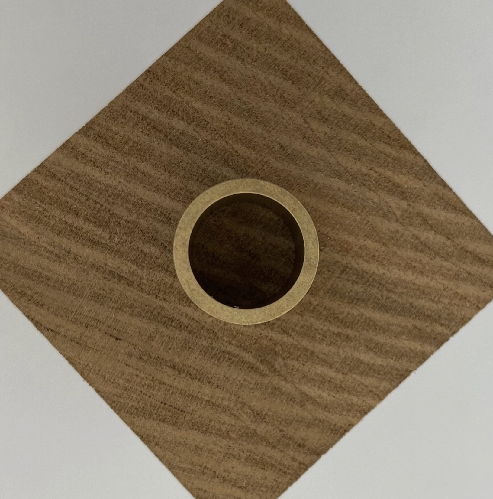
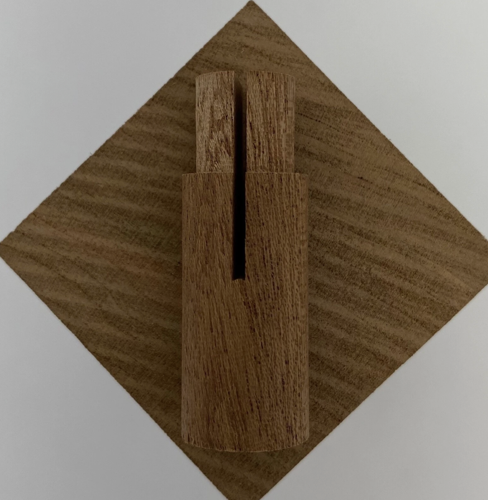
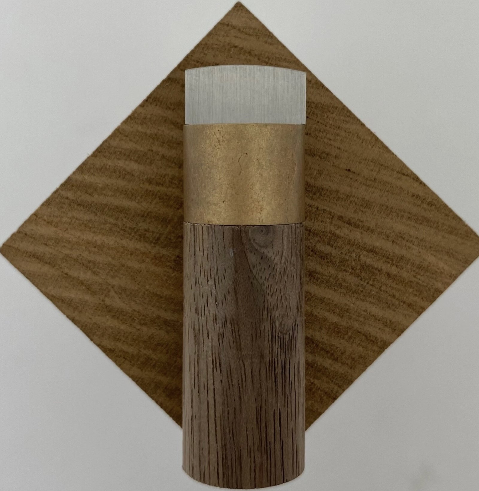
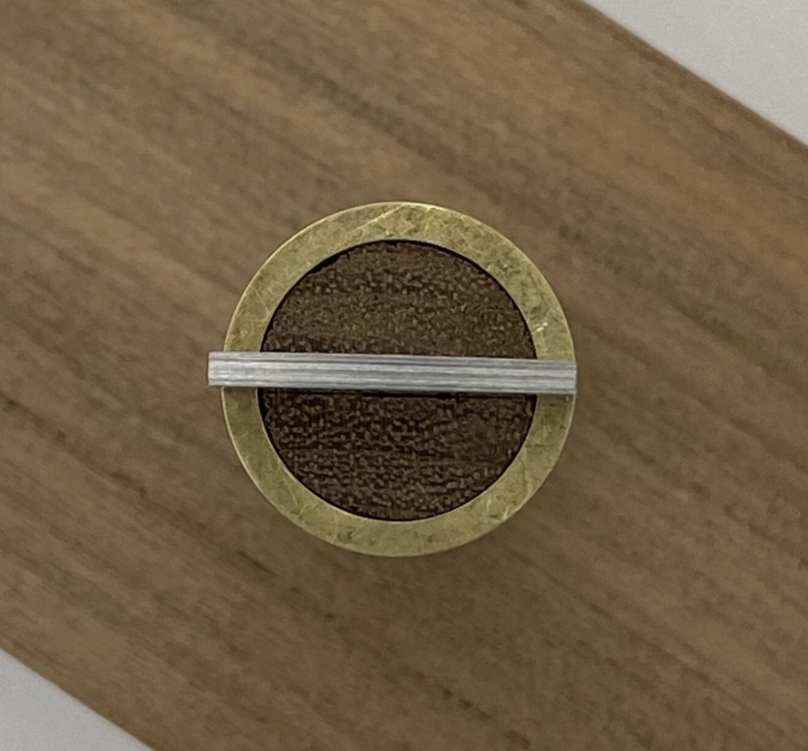
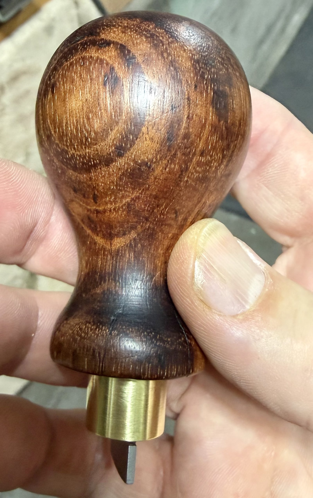
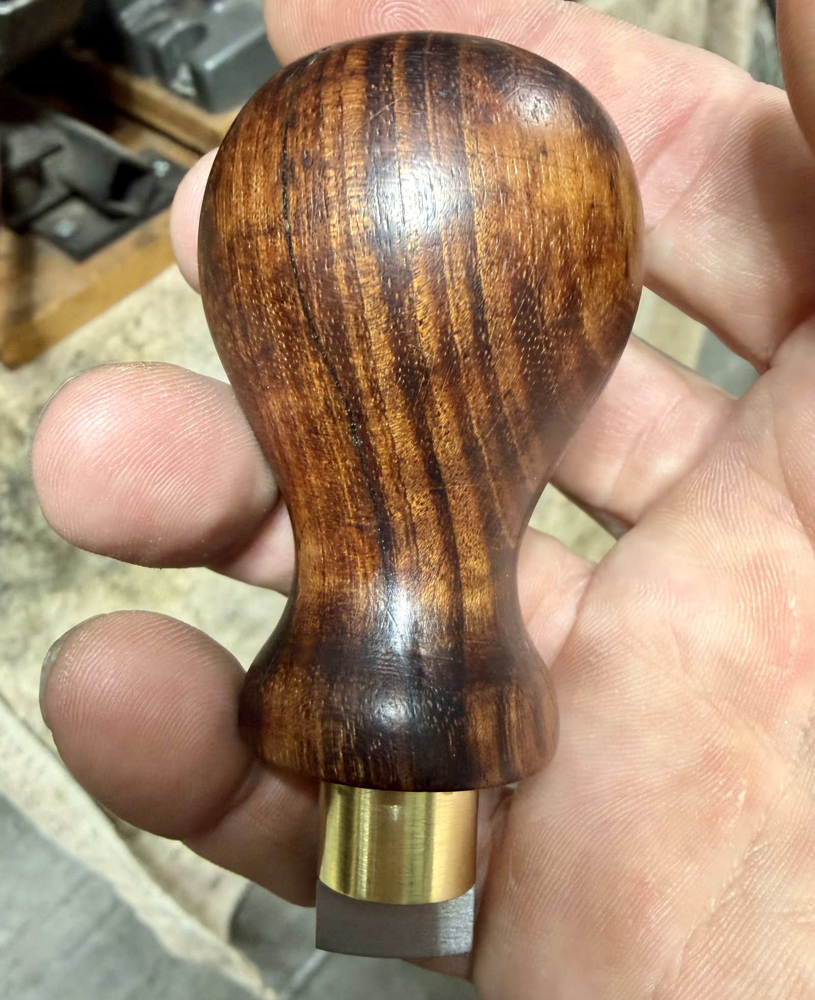
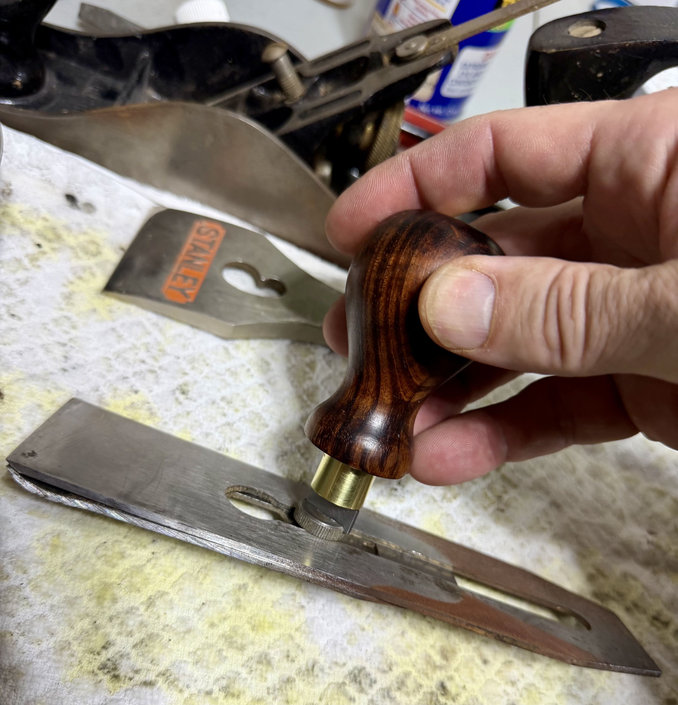
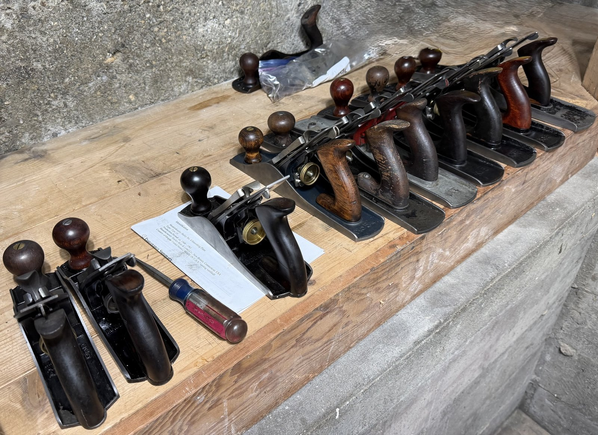

The chip breaker screw.
Every Stanley hand plane has one. That flat-head screw sitting in the middle of the chip breaker — the one that clamps it tight to the blade — is also one of the most reliably frustrating screws in woodworking. It sits recessed in the plane body. It needs to be loosened and retightened frequently enough that you want to be careful to avoid stripping out the screw head.
For a long time I dealt with it the way most people do: a standard flathead, the wrong size, seated imperfectly in the slot, applying lateral force I didn't want to apply. Workable. Not good. The kind of small annoyance that you stop noticing because you've accepted it as part of the process.
Then I found Dave Corinth's YouTube video and understood that the problem was solved — I just didn't have the tool yet.
"Once you know a chip breaker screwdriver exists, you can't imagine not having one. The right tool for the job is the right tool for the job."
The right person solving the right problem.
Dave Corinth is a woodworker, tool creator, teacher, and restorer. His chip breaker screwdriver video is exactly what his channel does at its best: a methodical walk-through of a problem worth solving, a design that addresses that problem precisely, and enough detail about the why that you actually understand the tool you're building. Worth your time even if you never build one.
The design is straightforward and elegant: a blade cut from O1 tool steel, ground to a precise flat tip sized for the chip breaker slot, fitted through a turned brass ferrule into a handle shaped for real downward pressure and torque. Nothing unnecessary. Everything intentional.
Dave sells a kit on eBay — the machined O1 blade, the brass ferrule, and a cherry dowel for the handle — for $24.95. It's a good deal. The hard parts, the parts that require tooling most people don't have, are already done. You supply a handle and the time to put it together properly.
Before I built it, I reached out to Dave directly via Facebook Messenger with a couple of questions. He responded quickly and generously: confirmed his preference for the tall knob style over the shorter version (better leverage and more comfortable in the palm), and gave me the exact drill bit size needed to seat the cherry dowel correctly. That kind of maker-to-user generosity isn't something you take for granted.
"He confirmed his preference for the tall knob style and gave me the exact drill bit size. That kind of maker-to-user generosity isn't something you take for granted."
Three kit parts. One very good donor knob.
The kit arrives as three separate pieces: the O1 steel blade, the brass ferrule, and the cherry dowel. The blade is already ground — a precise, flat tip that seats cleanly in a chip breaker slot without camming out. The ferrule is turned to exact dimensions. The cherry dowel is pre-sized to fit inside the ferrule and accept the blade slot.
Rather than use the cherry dowel from the kit as the exterior handle, I took Dave's advice about the tall knob profile and reached for something I'd been holding onto in the shop — a salvaged tall knob pulled from a plane too far gone to save. When I cleaned it up, it turned out to be Brazilian Rosewood.
Not exactly a common salvage find. The figure on it is extraordinary.
The cherry dowel from the kit still plays a role: it's the sub-component that does the mechanical work — accepting the blade slot, fitting inside the ferrule. The Brazilian Rosewood knob goes around it, becoming the exterior you actually hold. Two-part handle construction: structural integrity from the kit design, aesthetics from whatever wood you choose to put around it.
Everything Dave machines, you assemble.
The three kit components as they arrive from Dave's eBay listing. The machining precision is immediately obvious — the blade tip is ground exactly right, the ferrule dimensions are tight, and the dowel slot is centered and clean.



The kit does the hard work. You do the assembly.
Drilling and fitting. Using the drill bit size Dave confirmed in our exchange, I drilled the Brazilian Rosewood knob to accept the cherry dowel. The dowel from the kit fits inside the ferrule; the knob fits around the dowel. Dave's specified dimensions are right — everything seats as it should without forcing.
Assembly. The blade slots into the pre-cut groove in the cherry dowel. The ferrule collar slides over the dowel and seats flush against the face of the rosewood knob. The result is a single unified tool: blade seated in the dowel, dowel inside the ferrule, ferrule flush against the knob face. Marine epoxy at the mechanical joints makes it permanent.
Sanding the knob. Before finishing, I sanded the rosewood through the standard progression — 80, 120, 180, 220 — to smooth out any marks from the salvage and bring up the grain. Rosewood at 220 grit is something. The tight figure and reddish-brown tones that emerge after sanding make every other handle wood feel like a consolation prize.
Boiled Linseed Oil — three coats. Applied over a few days, letting each coat absorb fully before the next. BLO is slower than polymerized tung oil — longer dry times, more patience required — but it penetrates deeply and builds real warmth in the wood. The rosewood responded well. Each coat deepened the color and brought more of the figure forward.
Dewaxed shellac — one coat. A thin wash coat over the cured BLO to seal the oil and give the wax a clean surface to bond to. Without it, wax over straight oil can go soft or uneven over time. Apply thin, let flash off fully.
Paste wax — finish. Applied thin, allowed to haze, buffed with a clean cotton rag. The result is a soft, warm sheen — nothing plastic or high-gloss. The kind of finish that feels right in the hand because it is right.
"The rosewood at 220 grit, with BLO on it, is something. If I built another one, I'd swap the BLO for Walrus Oil — I know how it behaves now — but this one came out beautifully and I have no complaints."
Coming together.




If you squint, it's mint.



Worth every minute.
The Honest Take
It works perfectly. Every time I need to adjust a chip breaker, this is what I reach for. The blade seats cleanly in the slot — no slipping, no cam-out, no lateral pressure I don't want to apply. The tall knob puts you directly over the screw with real downward force. It just works, and nothing else comes close.
The Brazilian Rosewood knob was a happy accident of salvage. The figure on it is extraordinary, and the BLO brings it out well. If I built another one, I'd swap the BLO for Walrus Oil — I know how polymerized tung oil behaves now and it would get there faster and more predictably. But this one came out beautifully. No complaints.
One more thing worth saying: Dave Corinth's generosity in responding to my questions — specific, practical, exactly what I needed — made this project better. Buy his kit. Watch his video. Tell him I sent you.
Everything that touched this build.
Some links below are affiliate links — I earn a small commission if you buy through them, at no extra cost to you. I only list what I actually used.
- Dave Corinth's Chip Breaker Screwdriver Kit Available on eBay. Includes the O1 steel blade (pre-ground to the correct chip breaker tip profile), brass ferrule, and cherry dowel. The hard parts are already done. $24.95 and worth every cent.
- Sandpaper — 80, 120, 180, 220 grit Full progression on the rosewood knob. The 80 opens the surface and removes tool marks; 220 finishes before oil. The grain that emerges at 220 on Brazilian Rosewood is the moment you understand why this wood is worth finding.
- Boiled Linseed Oil Three coats over a few days, letting each absorb fully. BLO is slower than polymerized tung oil — longer dry times — but penetrates deeply. Next build I'd use Walrus Oil for more predictable cure and comparable results. This one still came out beautifully.
- Lint-Free Cotton Cloths For applying and wiping BLO. Essential — leaving excess oil on the surface leads to a sticky, gummy finish that takes forever to cure properly.
- Dewaxed Shellac One thin wash coat between the cured BLO and the paste wax. Seals the oil and gives the wax a stable surface to bond to — without this, wax over bare oil can go soft over time. Apply thin, let flash off fully before waxing.
- Paste Wax Final finish coat — applied thin, allowed to haze, buffed with clean cotton rag. Soft, warm sheen. Nothing plastic. The right finish for a tool that goes in the hand.
- Marine Epoxy For permanently seating the blade in the cherry dowel and securing the assembly in the rosewood knob. A mechanical joint this small needs a strong, permanent adhesive. Marine epoxy is the right call.